Món & nguyên liệu
Danh mục tên và mã theo chủ đề, kèm cấu trúc công thức và trạm chế biến.
Trong trang này
Thư viện hình món & nguyên liệuDanh mục món và thành phầnTra cứu mãCách cấu trúc công thứcThư viện hình món & nguyên liệu
Mở từng map để xem ảnh. Món ăn dùng ảnh đại diện loại món; nguyên liệu giữ tên và trạng thái tương ứng trong cấu hình. Đây là thư viện hình theo đồ thị chế biến, không tự đồng nhất mã hình với mã enum ở bảng bên dưới.
Burger · 3 loại món · 35 ảnh nguyên liệu/thành phần
Món ăn

Nguyên liệu và thành phần
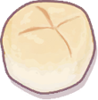
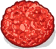
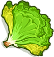


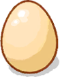


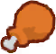


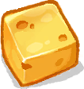
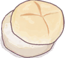
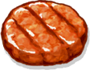


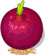


Coffee · 5 loại món · 30 ảnh nguyên liệu/thành phần
Món ăn

Nguyên liệu và thành phần
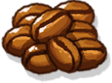
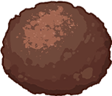


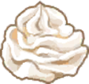
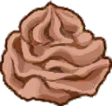


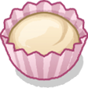


sushi · 5 loại món · 19 ảnh nguyên liệu/thành phần
Món ăn
Nguyên liệu và thành phần
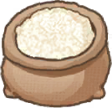
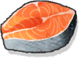
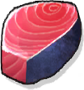
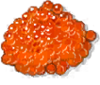
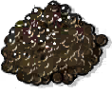
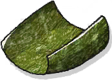
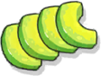
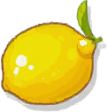
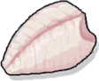
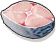
Pasta Combinations · 4 loại món · 43 ảnh nguyên liệu/thành phần
Món ăn
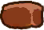
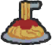
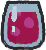
Nguyên liệu và thành phần
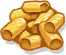
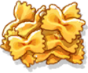
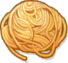
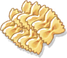

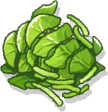
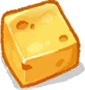
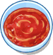
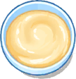
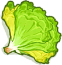
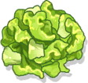
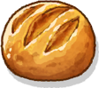


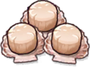
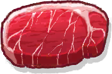
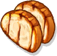
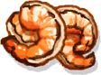
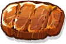
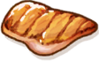

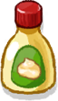
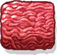
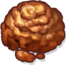
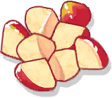
Ice Cream · 5 loại món · 44 ảnh nguyên liệu/thành phần
Món ăn
Nguyên liệu và thành phần
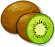
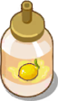
Sandwich · 5 loại món · 21 ảnh nguyên liệu/thành phần
Món ăn
Nguyên liệu và thành phần


Danh mục món và thành phần
Có 33 mã món và 162 mã thành phần trong các bảng định nghĩa của 7 chủ đề. Giá trị None đã được loại khỏi thống kê. Đây là số mã trong bảng, chưa phải số món đã mở hoặc số recipe đang được dùng.
| Chủ đề | Mã món | Mã thành phần |
|---|---|---|
burger | 4 | 17 |
coffee | 4 | 20 |
icecream | 5 | 35 |
pasta | 4 | 23 |
sandwich | 5 | 21 |
seafood | 6 | 26 |
sushi | 5 | 20 |
Tra cứu mã
| Chủ đề | Nhóm | Tên định nghĩa | Mã | Bảng |
|---|---|---|---|---|
sushi | Thành phần | Rice | 0 | SushiPiece |
sushi | Thành phần | Seaweed | 1 | SushiPiece |
sushi | Thành phần | TeaCup | 2 | SushiPiece |
sushi | Thành phần | Tuna | 3 | SushiPiece |
sushi | Thành phần | Salmon | 4 | SushiPiece |
sushi | Thành phần | Hirame | 5 | SushiPiece |
sushi | Thành phần | Mackerel | 6 | SushiPiece |
sushi | Thành phần | Shrimp | 7 | SushiPiece |
sushi | Thành phần | Octopus | 8 | SushiPiece |
sushi | Thành phần | Avocado | 9 | SushiPiece |
sushi | Thành phần | RoeOrange | 10 | SushiPiece |
sushi | Thành phần | RoeBlack | 11 | SushiPiece |
sushi | Thành phần | RoeGreen | 12 | SushiPiece |
sushi | Thành phần | Shiso | 13 | SushiPiece |
sushi | Thành phần | Mayonnaise | 14 | SushiPiece |
sushi | Thành phần | Wasabi | 15 | SushiPiece |
sushi | Thành phần | Lemon | 16 | SushiPiece |
sushi | Thành phần | Water | 17 | SushiPiece |
sushi | Thành phần | Egg | 18 | SushiPiece |
sushi | Thành phần | Tea | 19 | SushiPiece |
sushi | Món ăn | Nigiri | 1 | SushiDish |
sushi | Món ăn | Maki | 2 | SushiDish |
sushi | Món ăn | Gunkan | 3 | SushiDish |
sushi | Món ăn | Sashimi | 4 | SushiDish |
sushi | Món ăn | Tea | 5 | SushiDish |
sandwich | Thành phần | Bread | 0 | SandwichPiece |
sandwich | Thành phần | Ham | 1 | SandwichPiece |
sandwich | Thành phần | Egg | 2 | SandwichPiece |
sandwich | Thành phần | Cheese | 3 | SandwichPiece |
sandwich | Thành phần | Tomato | 4 | SandwichPiece |
sandwich | Thành phần | Lettuce | 5 | SandwichPiece |
sandwich | Thành phần | Cucumber | 6 | SandwichPiece |
sandwich | Thành phần | SweetCorn | 7 | SandwichPiece |
sandwich | Thành phần | Mayonnaise | 8 | SandwichPiece |
sandwich | Thành phần | WhippedCream | 9 | SandwichPiece |
sandwich | Thành phần | Strawberry | 10 | SandwichPiece |
sandwich | Thành phần | Kiwi | 11 | SandwichPiece |
sandwich | Thành phần | Mango | 12 | SandwichPiece |
sandwich | Thành phần | Grape | 13 | SandwichPiece |
sandwich | Thành phần | IceCubes | 14 | SandwichPiece |
sandwich | Thành phần | Pumpkin | 15 | SandwichPiece |
sandwich | Thành phần | Bacon | 16 | SandwichPiece |
sandwich | Thành phần | Chicken | 17 | SandwichPiece |
sandwich | Thành phần | Mushroom | 18 | SandwichPiece |
sandwich | Thành phần | Parsley | 19 | SandwichPiece |
sandwich | Thành phần | Milk | 20 | SandwichPiece |
sandwich | Món ăn | SavorySandwich | 1 | SandwichDish |
sandwich | Món ăn | FruitSandwich | 2 | SandwichDish |
sandwich | Món ăn | Salad | 3 | SandwichDish |
sandwich | Món ăn | Juice | 4 | SandwichDish |
sandwich | Món ăn | Soup | 5 | SandwichDish |
pasta | Món ăn | Pasta | 1 | PastaDish |
pasta | Món ăn | Salad | 2 | PastaDish |
pasta | Món ăn | Meat | 3 | PastaDish |
pasta | Món ăn | Soda | 4 | PastaDish |
pasta | Thành phần | Spaghetti | 0 | PastaPiece |
pasta | Thành phần | Manicotti | 1 | PastaPiece |
pasta | Thành phần | Farfalle | 2 | PastaPiece |
pasta | Thành phần | TomatoSauce | 3 | PastaPiece |
pasta | Thành phần | SpinachSauce | 4 | PastaPiece |
pasta | Thành phần | CheeseSauce | 5 | PastaPiece |
pasta | Thành phần | Milk | 6 | PastaPiece |
pasta | Thành phần | Lettuce | 7 | PastaPiece |
pasta | Thành phần | SmallTomato | 8 | PastaPiece |
pasta | Thành phần | Lemon | 9 | PastaPiece |
pasta | Thành phần | Bread | 10 | PastaPiece |
pasta | Thành phần | Octopus | 11 | PastaPiece |
pasta | Thành phần | Shrimp | 12 | PastaPiece |
pasta | Thành phần | Clam | 13 | PastaPiece |
pasta | Thành phần | Beef | 14 | PastaPiece |
pasta | Thành phần | Chicken | 15 | PastaPiece |
pasta | Thành phần | Soda | 16 | PastaPiece |
pasta | Thành phần | Mayonaise | 17 | PastaPiece |
pasta | Thành phần | Ice | 18 | PastaPiece |
pasta | Thành phần | GroundMeat | 19 | PastaPiece |
pasta | Thành phần | Salad | 20 | PastaPiece |
pasta | Thành phần | ChoppedTomato | 21 | PastaPiece |
pasta | Thành phần | Apple | 22 | PastaPiece |
icecream | Thành phần | Strawberry | 0 | IceCreamPiece |
icecream | Thành phần | Banana | 1 | IceCreamPiece |
icecream | Thành phần | Kiwi | 2 | IceCreamPiece |
icecream | Thành phần | CherrySyrup | 3 | IceCreamPiece |
icecream | Thành phần | GrapeSyrup | 5 | IceCreamPiece |
icecream | Thành phần | LemonSyrup | 6 | IceCreamPiece |
icecream | Thành phần | Oreo | 7 | IceCreamPiece |
icecream | Thành phần | Pocky | 8 | IceCreamPiece |
icecream | Thành phần | Sprinkles | 9 | IceCreamPiece |
icecream | Thành phần | VanillaIceCream | 10 | IceCreamPiece |
icecream | Thành phần | StrawberryIceCream | 11 | IceCreamPiece |
icecream | Thành phần | ChocolateIceCream | 12 | IceCreamPiece |
icecream | Thành phần | MatchaIceCream | 13 | IceCreamPiece |
icecream | Thành phần | GrapeIceCream | 14 | IceCreamPiece |
icecream | Thành phần | ConeBatter | 16 | IceCreamPiece |
icecream | Thành phần | Milk | 17 | IceCreamPiece |
icecream | Thành phần | IceCube | 18 | IceCreamPiece |
icecream | Thành phần | SmoothieStrawberry | 19 | IceCreamPiece |
icecream | Thành phần | SmoothieBanana | 20 | IceCreamPiece |
icecream | Thành phần | MangoIceCream | 22 | IceCreamPiece |
icecream | Thành phần | Blueberry | 23 | IceCreamPiece |
icecream | Thành phần | Avocado | 24 | IceCreamPiece |
icecream | Thành phần | Orange | 25 | IceCreamPiece |
icecream | Thành phần | ChocolateToppingSyrup | 26 | IceCreamPiece |
icecream | Thành phần | StrawberryToppingSyrup | 27 | IceCreamPiece |
icecream | Thành phần | RainbowJelly | 28 | IceCreamPiece |
icecream | Thành phần | WhiteJelly | 29 | IceCreamPiece |
icecream | Thành phần | Cherry | 30 | IceCreamPiece |
icecream | Thành phần | Coconut | 31 | IceCreamPiece |
icecream | Thành phần | SmoothieBlueberry | 32 | IceCreamPiece |
icecream | Thành phần | SmoothieAvocado | 33 | IceCreamPiece |
icecream | Thành phần | SmoothieOrange | 34 | IceCreamPiece |
icecream | Thành phần | GreenAppleSyrup | 35 | IceCreamPiece |
icecream | Thành phần | GreekYogurt | 36 | IceCreamPiece |
icecream | Thành phần | WhippingCream | 37 | IceCreamPiece |
icecream | Món ăn | Cone | 1 | IceCreamDish |
icecream | Món ăn | Cup | 2 | IceCreamDish |
icecream | Món ăn | Smoothie | 3 | IceCreamDish |
icecream | Món ăn | Milkshake | 4 | IceCreamDish |
icecream | Món ăn | ShaveIce | 5 | IceCreamDish |
burger | Thành phần | Bun | 0 | BurgerPiece |
burger | Thành phần | Patty | 1 | BurgerPiece |
burger | Thành phần | Tomato | 2 | BurgerPiece |
burger | Thành phần | Lettuce | 3 | BurgerPiece |
burger | Thành phần | Onion | 4 | BurgerPiece |
burger | Thành phần | Cheese | 5 | BurgerPiece |
burger | Thành phần | Egg | 6 | BurgerPiece |
burger | Thành phần | Soda | 7 | BurgerPiece |
burger | Thành phần | Ice | 8 | BurgerPiece |
burger | Thành phần | ChickenBreast | 9 | BurgerPiece |
burger | Thành phần | ChickenWing | 10 | BurgerPiece |
burger | Thành phần | ChickenThigh | 11 | BurgerPiece |
burger | Thành phần | ChickenNugget | 12 | BurgerPiece |
burger | Thành phần | Potato | 13 | BurgerPiece |
burger | Thành phần | Chilly | 14 | BurgerPiece |
burger | Thành phần | Chives | 15 | BurgerPiece |
burger | Thành phần | CheeseSauce | 16 | BurgerPiece |
burger | Món ăn | Burger | 1 | BurgerDish |
burger | Món ăn | Coca | 2 | BurgerDish |
burger | Món ăn | Chicken | 3 | BurgerDish |
burger | Món ăn | Potato | 4 | BurgerDish |
seafood | Món ăn | GrilledLobster | 1 | SeafoodDish |
seafood | Món ăn | SteamedKingCrab | 2 | SeafoodDish |
seafood | Món ăn | CedarPlankSalmon | 3 | SeafoodDish |
seafood | Món ăn | ScallopGratin | 4 | SeafoodDish |
seafood | Món ăn | LobsterRoll | 5 | SeafoodDish |
seafood | Món ăn | ClamChowder | 6 | SeafoodDish |
seafood | Thành phần | CedarPlank | 0 | SeafoodPiece |
seafood | Thành phần | HoisinMustardGlaze | 1 | SeafoodPiece |
seafood | Thành phần | MapleDijonGlaze | 2 | SeafoodPiece |
seafood | Thành phần | DillSprig | 3 | SeafoodPiece |
seafood | Thành phần | Capers | 4 | SeafoodPiece |
seafood | Thành phần | LettuceShredded | 5 | SeafoodPiece |
seafood | Thành phần | ChivesChopped | 6 | SeafoodPiece |
seafood | Thành phần | SeafoodSeasoning | 7 | SeafoodPiece |
seafood | Thành phần | OysterCrackers | 8 | SeafoodPiece |
seafood | Thành phần | LobsterGrilled | 9 | SeafoodPiece |
seafood | Thành phần | LobsterSalad | 10 | SeafoodPiece |
seafood | Thành phần | KingCrabSteamed | 11 | SeafoodPiece |
seafood | Thành phần | SalmonGrilled | 12 | SeafoodPiece |
seafood | Thành phần | ScallopsBroiled | 13 | SeafoodPiece |
seafood | Thành phần | SplitTopRollToasted | 14 | SeafoodPiece |
seafood | Thành phần | ClamChowderCooked | 15 | SeafoodPiece |
seafood | Thành phần | GarlicButterMelted | 16 | SeafoodPiece |
seafood | Thành phần | ChiliButterMelted | 17 | SeafoodPiece |
seafood | Thành phần | LemonHerbButterMelted | 18 | SeafoodPiece |
seafood | Thành phần | LemonWedge | 19 | SeafoodPiece |
seafood | Thành phần | ParsleyChopped | 20 | SeafoodPiece |
seafood | Thành phần | CeleryDiced | 21 | SeafoodPiece |
seafood | Thành phần | CornGrilled | 22 | SeafoodPiece |
seafood | Thành phần | PotatoesRoasted | 23 | SeafoodPiece |
seafood | Thành phần | GarlicBreadBroiled | 24 | SeafoodPiece |
seafood | Thành phần | GratinToppingBrowned | 25 | SeafoodPiece |
coffee | Thành phần | Donut | 0 | CoffeePiece |
coffee | Thành phần | DonutBar | 1 | CoffeePiece |
coffee | Thành phần | DonutInf | 2 | CoffeePiece |
coffee | Thành phần | ChocoGlaze | 3 | CoffeePiece |
coffee | Thành phần | StrawGlaze | 4 | CoffeePiece |
coffee | Thành phần | VaniGlaze | 5 | CoffeePiece |
coffee | Thành phần | BlueGlaze | 6 | CoffeePiece |
coffee | Thành phần | CupCold | 7 | CoffeePiece |
coffee | Thành phần | CupHot | 8 | CoffeePiece |
coffee | Thành phần | Coffee | 9 | CoffeePiece |
coffee | Thành phần | Milk | 10 | CoffeePiece |
coffee | Thành phần | Ice | 11 | CoffeePiece |
coffee | Thành phần | Cupcake | 12 | CoffeePiece |
coffee | Thành phần | Cream | 13 | CoffeePiece |
coffee | Thành phần | ChocoCream | 14 | CoffeePiece |
coffee | Thành phần | Sprinkle | 15 | CoffeePiece |
coffee | Thành phần | Blueberry | 16 | CoffeePiece |
coffee | Thành phần | Strawberry | 17 | CoffeePiece |
coffee | Thành phần | Kiwi | 18 | CoffeePiece |
coffee | Thành phần | Pineapple | 19 | CoffeePiece |
coffee | Món ăn | CoffeeCold | 1 | CoffeeDish |
coffee | Món ăn | CoffeeHot | 2 | CoffeeDish |
coffee | Món ăn | Cupcake | 3 | CoffeeDish |
coffee | Món ăn | Donut | 4 | CoffeeDish |
Cách cấu trúc công thức
Hệ thống công thức tách thành nguyên liệu, trạm và recipe. Có danh sách món, tên/biểu tượng và thông số tốc độ chế biến. Một chế độ hiển thị nguyên liệu có thể dùng đầu vào thô ở băng chuyền thay vì chỉ hiện thành phần trực tiếp của món.
| Thành phần hệ thống | Vai trò có thể xác nhận |
|---|---|
| Nguyên liệu | Có ID và ánh xạ loại thành phần; tham gia tra cứu nguyên liệu thô/đã chuẩn bị. |
| Trạm chế biến | Có nhóm nhận nguyên liệu, trạng thái xử lý, số kết quả và trạng thái tạm dừng. |
| Recipe | Có bảng kết hợp đầu vào với kết quả và tra cứu món có thể đặt. |
| Nhiều lựa chọn | Có loại trạm kết hợp nhiều lựa chọn và trạm dùng chung nguyên liệu đầu tiên. |